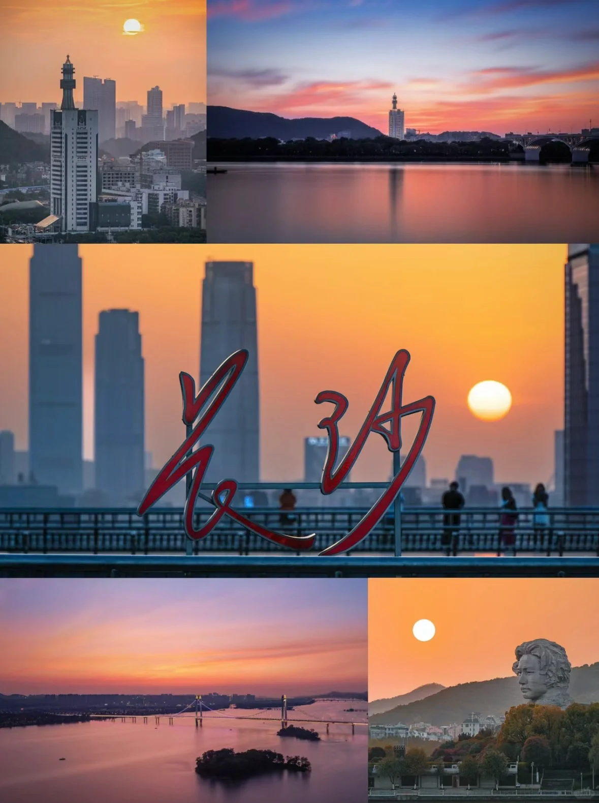
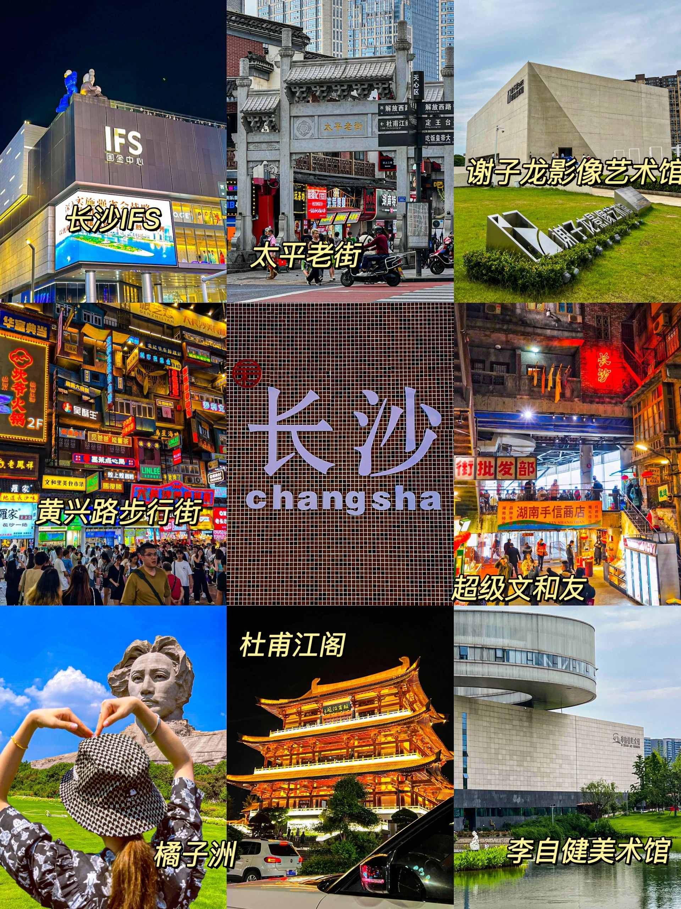
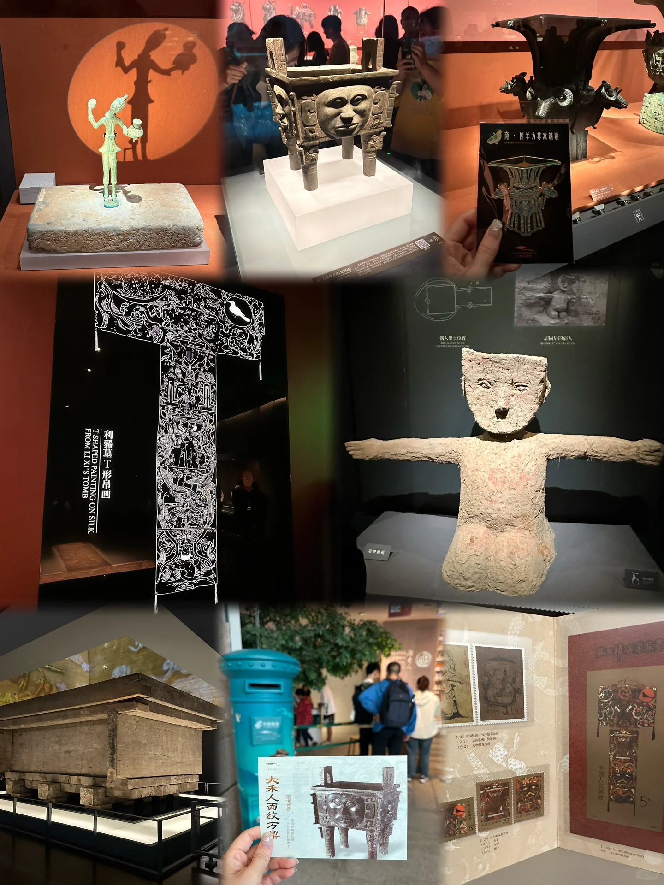

Day1️⃣
五一广场 👉🏻IFS 国金👉🏻黄兴广场👉🏻文和友👉🏻杜甫江阁👉🏻冬瓜山夜市 ⭕️这条线路走路比较多噢！
建议大家晚上再去黄兴广场和文和友，夜晚开灯非常出片！杜甫江阁也是晚上去的！白天大家可以逛一下 IFS 打卡拍照！然后冬瓜山夜市是我在网上找到的本地人去吃的夜市，所以商铺不算很多！有一个烈火牛肉强烈推荐！！ ‼️茶颜悦色真的是哪里都有！所以大家不要挤在一家店里排队了噢！

Day2️⃣
Day2️⃣ 橘子洲👉🏻岳麓山👉🏻后湖👉🏻河西大学城👉🏻渔人码头 ⭕️橘子洲门票🎫免费！小火车记得一定提前预约 橘子洲里面如果你不是特种兵的特种兵还是坐小火车吧！因为真的特别大！挨着的江边也特别出片，里面很大有很多除了毛爷爷以外也很不错的景点！ ‼️如果想和毛爷爷合照可以去侧面！不然就是人人人人人人我人人人人 岳麓山也要提前去预约哦！！大家可以和爱晚亭拍照打卡！记得带上水和食物！ ✅拍照我建议大家穿纯色会好看(｡･ω･｡)

Day3️⃣
开福寺👉🏻省博物馆👉🏻烈士公园👉🏻四方坪夜市 ‼️博物馆周一闭馆一定要提前预约啊啊啊 如果没有预约上可以去李自建美术馆噢！外面的草坪湖泊非常漂亮！还有黑天鹅🦢 住宿🏠 因为我是一个人旅行全程住青旅！就没有办法给到大家推荐了！但是建议住五一广场！出行方便 🥘美食 千人千味！推荐“爱饭”！因为除了这个其他的我吃的都是小吃！不喜欢网红店！ 最后欢迎大家来到长沙！̋(ˊ•͈ꇴ•͈ˋ) 湖南人都非常热情好客！我一路遇到的都是很好的人！